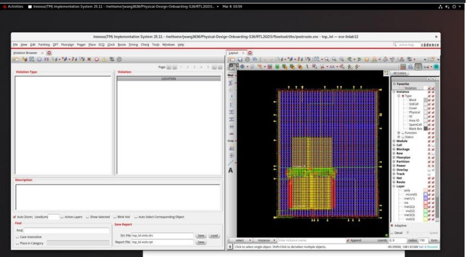
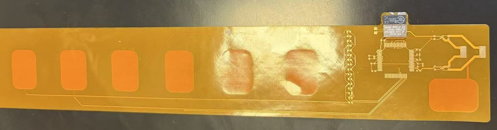
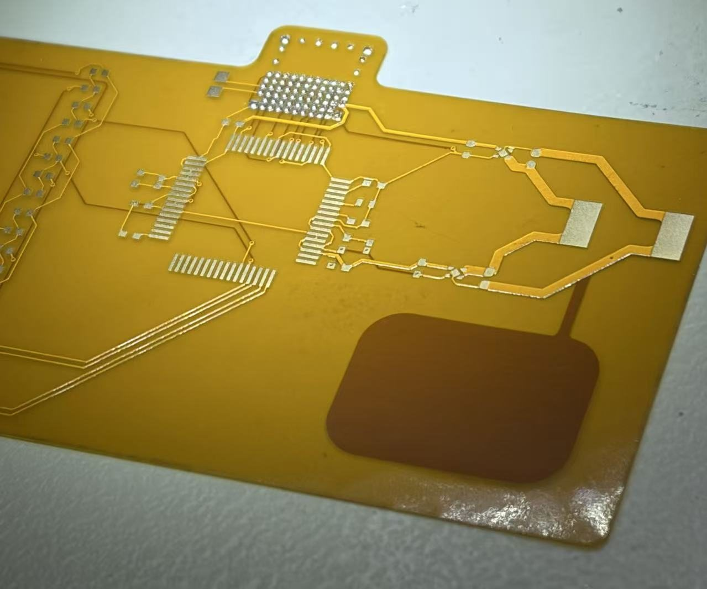
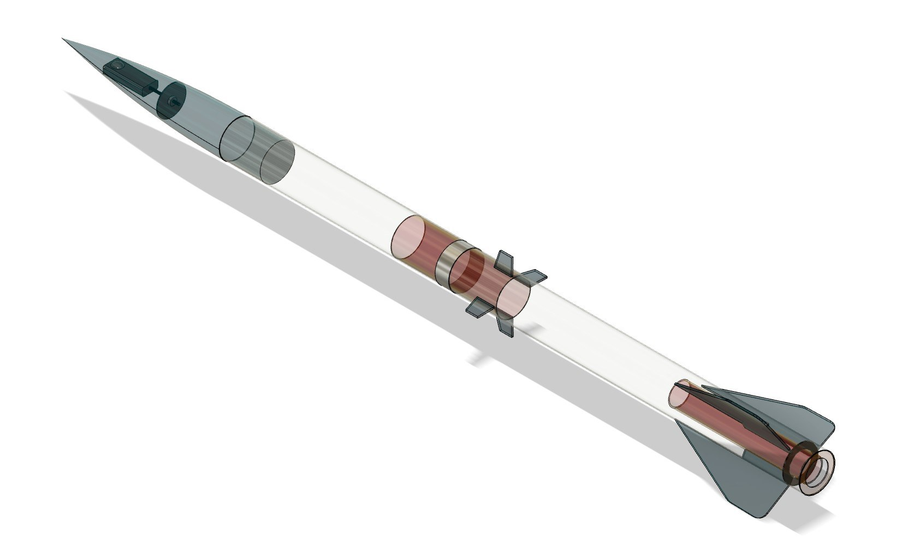
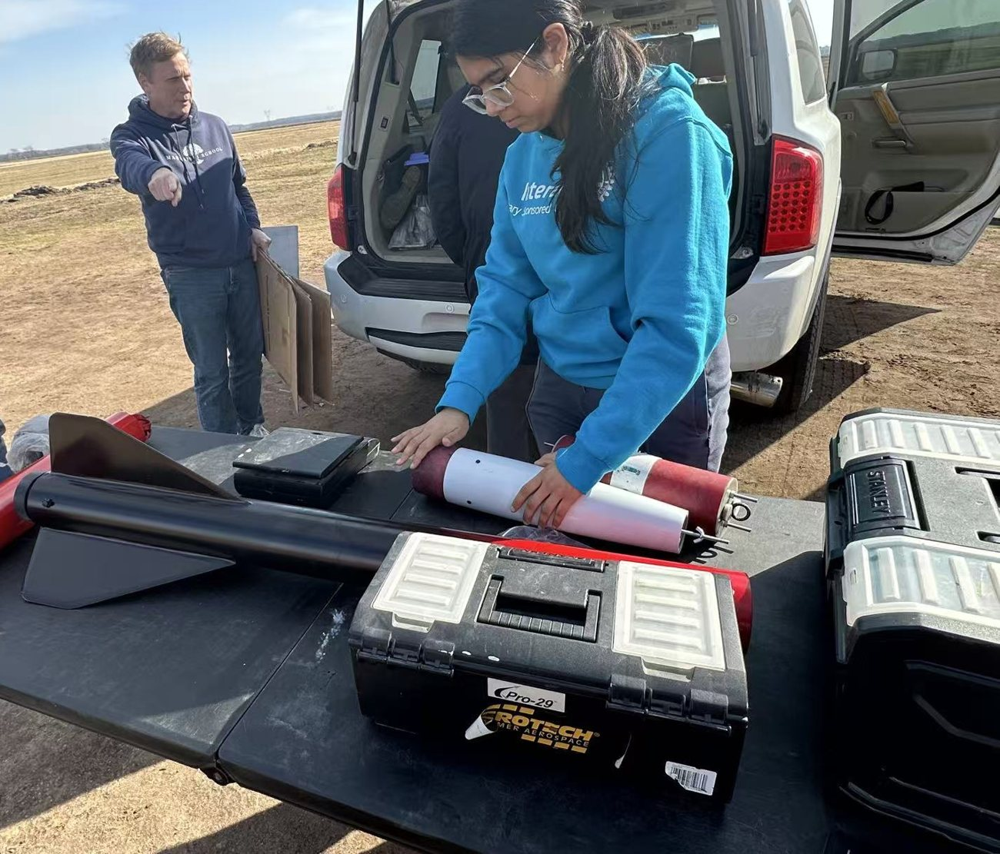

Most of my work sits somewhere between RTL and real hardware. Here are the projects I’m proudest of, newest first, with photos and screenshots from the actual work.
FEATURED / DISCOVERY PROJECT
Wheatstone bridge sensor circuit
I derived how a Wheatstone bridge turns a tiny resistance change into a voltage, made it about 100 times more sensitive with an instrumentation amplifier in LTspice, and built the bridge on a breadboard at the Hive to compare real measurements with my math.
A lot of these projects use the same chip design flow. RTL is the hardware description I write in SystemVerilog. GDS is the final layout file a foundry uses to make the chip. Everything in between turns one into the other.
RTLSystemVerilog design
VerifyUVM testbench, assertions, coverage
SynthesisRTL to gates
Floorplanmacros, halos, blockages
Place + CTScells and clock tree
Routemetal layers
Signofftiming closure, DRC
GDSfinal layout
Gold steps are the ones I run in Cadence Innovus at Silicon Jackets.
RISC-V (RV32I) single-core CPU
Personal project · Sep 2026 to now · in progress
SystemVerilog
Verification
RTL-to-GDS
A small RISC-V CPU that I’m designing, verifying and taking through physical design myself. It runs a subset of the RV32I instruction set and takes three cycles per instruction: fetch, decode and execute.
Instructions so far: addi, add, sub, lw, sw, beq, sll, srl and ebreak
Hooking the core up to the SRAM and memory controller interfaces I was given
Testing each instruction in simulation as I add it, then setting up the RTL-to-GDS flow for the core
I kept the instruction set small on purpose so I can get the whole flow working end to end before adding more.
64-bit calculator ASIC
Silicon Jackets · Jan to Mar 2026 · with a teammate
SystemVerilog
UVM
SVA
Cadence Innovus
Python
Tcl
1,000+ → 0DRC violations
−2.7 → +0.01 nssetup WNS
99.82%functional coverage
7 / 7assertions passing
The chip reads pairs of 64-bit numbers from SRAM, adds them with a 32-bit adder in two passes, and writes the result back. A seven-state FSM runs the whole thing. I took it from RTL all the way to a routed layout.
Verification. I built a UVM testbench with a driver, monitor and scoreboard that checks every result against the expected sum, plus SystemVerilog assertions for the easy-to-break parts, like the carry making it from the low half to the high half.
Physical design. The first routed design had over 1,000 DRC violations. I dug through the SRAM LEF files to see where routing wasn’t allowed, then added placement halos around the SRAMs, routing blockages on the lower metal layers, and opened up more layers for routing. That got it to zero. Setup timing went from about −2.7 ns to positive. I also wrote a Python script to parse the timing report and count the failing paths.
Before: DRC markers all over the routed design.

After: the violation browser is empty.
Coverage report in Cadence IMC: 99.82% overall, 100% FSM and toggle coverage.
Physical design at Silicon Jackets
Silicon Jackets · Jan 2026 to now
Beyond the calculator ASIC, I keep running RTL-to-GDS flows for the team: floorplanning, clock tree synthesis, routing, timing closure and DRC cleanup in Cadence Innovus, with Tcl and Python scripts to speed up the parts I repeat. In October 2026 I started on the physical design of Vortex, an open-source RISC-V GPU.
Wearable EMG flex PCB
Mechatronics & Motivation VIP · Jan to May 2026
Altium
Flex PCB
Mixed-signal
BGA rework
A board that sits on the skin, reads muscle signals (EMG) through six electrode pads, and streams the data over Bluetooth. I co-designed the schematic and two-layer flex layout in Altium with the EMG subteam lead. The signals are tiny, from tens of microvolts to a few millivolts, so most of the design is about keeping noise out: differential inputs, a 24-bit ADS1298 front end, and separate low-noise regulators for the analog and digital sides.
I hand-assembled and reworked three prototypes under a stereo microscope, including BGA parts whose solder joints you can’t see. On the first boards I traced a wrong clock-select pin strap back to the datasheet and patched it with a jumper wire. I wrote up the full assembly process so the rest of the team could build boards too.

The assembled board, about 20 cm long.

Bare board up close, before assembly.The clock-select fix, a jumper wire beside the ADS1298.
OTA sizing optimizer
GAMMA Research Group, Georgia Tech · Dec 2025 to now
MATLAB
Simulink
Analog / mixed-signal
An OTA is a type of amplifier, and sizing one means picking transistor dimensions and currents that hit a target figure of merit. I built a MATLAB surrogate optimization pipeline that found the same best design as brute-force search with five times fewer circuit evaluations (500 instead of 2,511) and about eight times less runtime. Along the way I found a bug in the figure-of-merit formula that kept pushing the optimizer toward designs that weren’t physically valid, and flagged it so it could be fixed. I also build Simulink models of analog and mixed-signal circuits for the lab.
NASA Student Launch
Technical lead · Jun 2023 to Jun 2024 · high school
I led payload design, integration and flight-readiness testing for a high-power rocket with dual deployment, meaning two separate parachute events. It flew to about one mile, and our team qualified out of a national pool of more than 1,000 teams. For our design reviews with NASA engineers, we wrote a failure mode analysis and a two-person arming procedure.

3D model of the launch vehicle.

Getting the rocket ready on launch day.Photo taken by my NASA Student Launch team
Air suspension research and internship
Independent research, Jun 2023 to Apr 2024 · R&D intern, Shanghai ZhiCheng Software, Summer 2024
I designed a renewable energy air suspension system that turns a car’s bouncing into electricity through a hydraulic bypass and a small generator. My calculations estimated about 6.8% more range for an electric vehicle. I wrote a 35-page paper on it, and it won awards including 2nd place at the 2024 Iowa State Science Fair and recognition from the Yale Science & Engineering Association, NOAA and the Office of Naval Research.
The next summer I interned at Shanghai ZhiCheng Software, writing embedded control software for an air suspension system. It reads five live vehicle inputs and drives an air pump to hold chassis height within ±5 mm.
My board at the 2024 State Science and Technology Fair of Iowa.